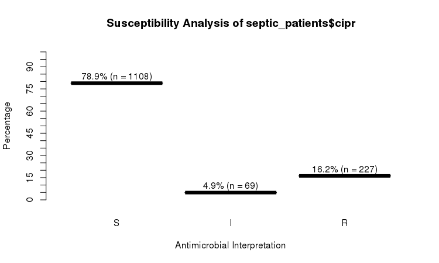

An R package to simplify the analysis and prediction of Antimicrobial Resistance (AMR) and to work with antibiotic properties by using evidence-based methods.
This R package was created for academic research by PhD students of the Faculty of Medical Sciences of the University of Groningen and the Medical Microbiology & Infection Prevention (MMBI) department of the University Medical Center Groningen (UMCG).
▶️ Get it with install.packages("AMR") or see below for other possibilities.
▶️ Read the changelog here.
Authors
Matthijs S. Berends  1,2,a, Christian F. Luz 1,a, Erwin E.A. Hassing2, Corinna Glasner 1,b, Alex W. Friedrich 1,b, Bhanu N.M. Sinha 1,b
1,2,a, Christian F. Luz 1,a, Erwin E.A. Hassing2, Corinna Glasner 1,b, Alex W. Friedrich 1,b, Bhanu N.M. Sinha 1,b
1 Department of Medical Microbiology, University of Groningen, University Medical Center Groningen, Groningen, the Netherlands - rug.nl umcg.nl
2 Certe Medical Diagnostics & Advice, Groningen, the Netherlands - certe.nl
a R package author and thesis dissertant
b Thesis advisor


Why this package?
This R package was intended to make microbial epidemiology easier. Most functions contain extensive help pages to get started.
The AMR package basically does four important things:
- It cleanses existing data, by transforming it to reproducible and profound classes, making the most efficient use of R. These functions all use artificial intelligence to guess results that you would expect:
- Use
as.moto get an ID of a microorganism. The IDs are human readable for the trained eye - the ID of Klebsiella pneumoniae is “B_KLBSL_PNE” (B stands for Bacteria) and the ID of S. aureus is “B_STPHY_AUR”. The function takes almost any text as input that looks like the name or code of a microorganism like “E. coli”, “esco” and “esccol”. Evenas.mo("MRSA")will return the ID of S. aureus. Moreover, it can group all coagulase negative and positive Staphylococci, and can transform Streptococci into Lancefield groups. To find bacteria based on your input, it uses Artificial Intelligence to look up values in the included ITIS data, consisting of more than 18,000 microorganisms. It is very fast, see Benchmarks. - Use
as.rsito transform values to valid antimicrobial results. It produces just S, I or R based on your input and warns about invalid values. Even values like “<=0.002; S” (combined MIC/RSI) will result in “S”. - Use
as.micto cleanse your MIC values. It produces a so-called factor (called ordinal in SPSS) with valid MIC values as levels. A value like “<=0.002; S” (combined MIC/RSI) will result in “<=0.002”. - Use
as.atcto get the ATC code of an antibiotic as defined by the WHO. This package contains a database with most LIS codes, official names, DDDs and even trade names of antibiotics. For example, the values “Furabid”, “Furadantin”, “nitro” all return the ATC code of Nitrofurantoine.
- It enhances existing data and adds new data from data sets included in this package.
- Use
EUCAST_rulesto apply EUCAST expert rules to isolates. - Use
first_isolateto identify the first isolates of every patient using guidelines from the CLSI (Clinical and Laboratory Standards Institute).- You can also identify first weighted isolates of every patient, an adjusted version of the CLSI guideline. This takes into account key antibiotics of every strain and compares them.
- Use
MDRO(abbreviation of Multi Drug Resistant Organisms) to check your isolates for exceptional resistance with country-specific guidelines or EUCAST rules. Currently, national guidelines for Germany and the Netherlands are supported. - The data set
microorganismscontains the complete taxonomic tree of more than 18,000 microorganisms (bacteria, fungi/yeasts and protozoa). Furthermore, the colloquial name and Gram stain are available, which enables resistance analysis of e.g. different antibiotics per Gram stain. The package also contains functions to look up values in this data set likemo_genus,mo_family,mo_gramstainor evenmo_phylum. As they useas.mointernally, they also use artificial intelligence. For example,mo_genus("MRSA")andmo_genus("S. aureus")will both return"Staphylococcus". They also come with support for German, Dutch, Spanish, Italian, French and Portuguese. These functions can be used to add new variables to your data. - The data set
antibioticscontains the ATC code, LIS codes, official name, trivial name and DDD of both oral and parenteral administration. It also contains a total of 298 trade names. Use functions likeab_nameandab_tradenamesto look up values. Theab_*functions useas.atcinternally so they support AI to guess your expected result. For example,ab_name("Fluclox"),ab_name("Floxapen")andab_name("J01CF05")will all return"Flucloxacillin". These functions can again be used to add new variables to your data.
- It analyses the data with convenient functions that use well-known methods.
- Calculate the resistance (and even co-resistance) of microbial isolates with the
portion_R,portion_IR,portion_I,portion_SIandportion_Sfunctions. Similarly, the number of isolates can be determined with thecount_R,count_IR,count_I,count_SIandcount_Sfunctions. All these functions can be used with thedplyrpackage (e.g. in conjunction withsummarise) - Plot AMR results with
geom_rsi, a function made for theggplot2package - Predict antimicrobial resistance for the nextcoming years using logistic regression models with the
resistance_predictfunction - Conduct descriptive statistics to enhance base R: calculate kurtosis, skewness and create frequency tables
- It teaches the user how to use all the above actions.
- The package contains extensive help pages with many examples.
- It also contains an example data set called
septic_patients. This data set contains:- 2,000 blood culture isolates from anonymised septic patients between 2001 and 2017 in the Northern Netherlands
- Results of 40 antibiotics (each antibiotic in its own column) with a total of 38,414 antimicrobial results
- Real and genuine data
ITIS

This package contains the complete microbial taxonomic data (with all nine taxonomic ranks - from kingdom to subspecies) from the publicly available Integrated Taxonomic Information System (ITIS, https://www.itis.gov).
All (sub)species from the taxonomic kingdoms Bacteria, Fungi and Protozoa are included in this package, as well as all previously accepted names known to ITIS. Furthermore, the responsible authors and year of publication are available. This allows users to use authoritative taxonomic information for their data analysis on any microorganism, not only human pathogens. It also helps to quickly determine the Gram stain of bacteria, since all bacteria are classified into subkingdom Negibacteria or Posibacteria.
ITIS is a partnership of U.S., Canadian, and Mexican agencies and taxonomic specialists.
Get a note when a species was renamed
mo_shortname("Chlamydia psittaci")
# Note: 'Chlamydia psittaci' (Page, 1968) was renamed 'Chlamydophila psittaci' (Everett et al., 1999)
# [1] "C. psittaci"Get any property from the entire taxonomic tree for all included species
mo_class("E. coli")
# [1] "Gammaproteobacteria"
mo_family("E. coli")
# [1] "Enterobacteriaceae"
mo_subkingdom("E. coli")
# [1] "Negibacteria"
mo_gramstain("E. coli") # based on subkingdom
# [1] "Gram negative"
mo_ref("E. coli")
# [1] "Castellani and Chalmers, 1919"Do not get mistaken - the package only includes microorganisms
mo_phylum("C. elegans")
# [1] "Cyanobacteria" # Bacteria?!
mo_fullname("C. elegans")
# [1] "Chroococcus limneticus elegans" # Because a microorganism was found How to get it?
All stable versions of this package are published on CRAN, the official R network with a peer-reviewed submission process.
Install from CRAN
(Note: Downloads measured only by cran.rstudio.com, this excludes e.g. the official cran.r-project.org)
-
Install using RStudio (recommended):
- Click on
Toolsand thenInstall Packages... Type in
AMRand press Install-
Install in R directly:
Install from Zenodo

This package was also published on Zenodo (stable releases only): https://doi.org/10.5281/zenodo.1305355
Install from GitLab
This is the latest development version. Although it may contain bugfixes and even new functions compared to the latest released version on CRAN, it is also subject to change and may be unstable or behave unexpectedly. Always consider this a beta version. All below ‘badges’ should be green:
| Development Test | Result | Reference |
|---|---|---|
| All functions checked on Linux |  |
GitLab CI [ref 1] |
| All functions checked on Windows | Appveyor Systems Inc. [ref 2] | |
| Percentage of syntax lines checked | Codecov LLC [ref 3] |
If so, try it with:
install.packages("devtools")
devtools::install_gitlab("msberends/AMR")How to use it?
New classes
This package contains two new S3 classes: mic for MIC values (e.g. from Vitek or Phoenix) and rsi for antimicrobial drug interpretations (i.e. S, I and R). Both are actually ordered factors under the hood (an MIC of 2 being higher than <=1 but lower than >=32, and for class rsi factors are ordered as S < I < R). Both classes have extensions for existing generic functions like print, summary and plot.
These functions also try to coerce valid values.
RSI
The septic_patients data set comes with antimicrobial results of more than 40 different drugs. For example, columns amox and cipr contain results of amoxicillin and ciprofloxacin, respectively.
summary(septic_patients[, c("amox", "cipr")])
# amox cipr
# Mode :rsi Mode :rsi
# <NA> :1002 <NA> :596
# Sum S :336 Sum S :1108
# Sum IR:662 Sum IR:296
# -Sum R:659 -Sum R:227
# -Sum I:3 -Sum I:69 You can use the plot function from base R:
plot(septic_patients$cipr)
Or use the ggplot2 and dplyr packages to create more appealing plots:
library(dplyr)
library(ggplot2)
septic_patients %>%
select(amox, nitr, fosf, trim, cipr) %>%
ggplot_rsi()
Adjust it with any parameter you know from the ggplot2 package:
septic_patients %>%
select(amox, nitr, fosf, trim, cipr) %>%
ggplot_rsi(datalabels = FALSE,
width = 0.5, colour = "purple", size = 1, linetype = 2, alpha = 0.5)
It also supports grouping variables. Let’s say we want to compare resistance of drugs against Urine Tract Infections (UTI) between hospitals A to D (variable hospital_id):
septic_patients %>%
select(hospital_id, amox, nitr, fosf, trim, cipr) %>%
group_by(hospital_id) %>%
ggplot_rsi(x = "hospital_id",
facet = "Antibiotic",
nrow = 1,
datalabels = FALSE) +
labs(title = "AMR of Anti-UTI Drugs Per Hospital",
x = "Hospital")
You could use this to group on anything in your plots: Gram stain, age (group), genus, geographic location, et cetera.
Is there a significant difference between hospital A and D when it comes to Fosfomycin?
check_A_and_D <- septic_patients %>%
filter(hospital_id %in% c("A", "D")) %>% # filter on only hospitals A and D
select(hospital_id, fosf) %>% # select the hospitals and fosfomycin
group_by(hospital_id) %>%
count_df(combine_IR = TRUE) %>% # count all isolates per group (hospital_id)
tidyr::spread(hospital_id, Value) %>% # transform output so A and D are columns
select(A, D) %>% # and select these only
as.matrix() # transform to good old matrix for fisher.test
check_A_and_D
# A D
# [1,] 24 33
# [2,] 25 77Total sum is lower than 1,000 so we’d prefer a Fisher’s exact test, not a G-test (or its formerly used equivalent, the famous Chi2 test):
fisher.test(check_A_and_D)
#
# Fisher's Exact Test for Count Data
#
# data: check_A_and_D
# p-value = 0.03104
# alternative hypothesis: true odds ratio is not equal to 1
# 95 percent confidence interval:
# 1.054283 4.735995
# sample estimates:
# odds ratio
# 2.228006 Well, there you go!

Overwrite/force resistance based on EUCAST rules
This is also called interpretive reading.
a <- data.frame(mo = c("Staphylococcus aureus",
"Enterococcus faecalis",
"Escherichia coli",
"Klebsiella pneumoniae",
"Pseudomonas aeruginosa"),
vanc = "-", # Vancomycin
amox = "-", # Amoxicillin
coli = "-", # Colistin
cfta = "-", # Ceftazidime
cfur = "-", # Cefuroxime
peni = "S", # Benzylpenicillin
cfox = "S", # Cefoxitin
stringsAsFactors = FALSE)
a
# mo vanc amox coli cfta cfur peni cfox
# 1 Staphylococcus aureus - - - - - S S
# 2 Enterococcus faecalis - - - - - S S
# 3 Escherichia coli - - - - - S S
# 4 Klebsiella pneumoniae - - - - - S S
# 5 Pseudomonas aeruginosa - - - - - S S
b <- EUCAST_rules(a) # 18 results are forced as R or S
b
# mo vanc amox coli cfta cfur peni cfox
# 1 Staphylococcus aureus - S R R S S S
# 2 Enterococcus faecalis - - R R R S R
# 3 Escherichia coli R - - - - R S
# 4 Klebsiella pneumoniae R R - - - R S
# 5 Pseudomonas aeruginosa R R - - R R RBacteria IDs can be retrieved with the guess_mo function. It uses any type of info about a microorganism as input. For example, all these will return value B_STPHY_AUR, the ID of S. aureus:
guess_mo("stau")
guess_mo("STAU")
guess_mo("staaur")
guess_mo("S. aureus")
guess_mo("S aureus")
guess_mo("Staphylococcus aureus")
guess_mo("MRSA") # Methicillin Resistant S. aureus
guess_mo("MSSA") # Methicillin Susceptible S. aureus
guess_mo("VISA") # Vancomycin Intermediate S. aureus
guess_mo("VRSA") # Vancomycin Resistant S. aureusOther (microbial) epidemiological functions
# G-test to replace Chi squared test
g.test(...)
# Determine key antibiotic based on bacteria ID
key_antibiotics(...)
# Selection of first isolates of any patient
first_isolate(...)
# Predict resistance levels of antibiotics
resistance_predict(...)
# Get name of antibiotic by ATC code
abname(...)
abname("J01CR02", from = "atc", to = "umcg") # "AMCL"Frequency tables
Base R lacks a simple function to create frequency tables. We created such a function that works with almost all data types: freq (or frequency_tbl). It can be used in two ways:
Frequency are of course sorted by count at default:
septic_patients %>% freq(hospital_id)
# Class: factor (numeric)
# Length: 2000 (of which NA: 0 = 0.00%)
# Unique: 4
#
# Item Count Percent Cum. Count Cum. Percent
# --- ----- ------ -------- ----------- -------------
# 1 D 762 38.1% 762 38.1%
# 2 B 663 33.1% 1425 71.2%
# 3 A 321 16.1% 1746 87.3%
# 4 C 254 12.7% 2000 100.0%This can be changed with the sort.count parameter:
septic_patients %>% freq(hospital_id, sort.count = FALSE)
# Class: factor (numeric)
# Length: 2000 (of which NA: 0 = 0.00%)
# Unique: 4
#
# Item Count Percent Cum. Count Cum. Percent
# --- ----- ------ -------- ----------- -------------
# 1 A 321 16.1% 321 16.1%
# 2 B 663 33.1% 984 49.2%
# 3 C 254 12.7% 1238 61.9%
# 4 D 762 38.1% 2000 100.0%For numeric values, some extra descriptive statistics will be calculated:
freq(runif(n = 10, min = 1, max = 5))
# Frequency table
# Class: numeric
# Length: 10 (of which NA: 0 = 0.00%)
# Unique: 10
#
# Mean: 3.1
# Std. dev.: 1.3 (CV: 0.43, MAD: 1.8)
# Five-Num: 1.3 | 1.7 | 3.2 | 4.3 | 5.0 (IQR: 2.6, CQV: 0.43)
# Outliers: 0
#
# Item Count Percent Cum. Count Cum. Percent
# --- --------- ------ -------- ----------- -------------
# 1 1.271079 1 10.0% 1 10.0%
# 2 1.333975 1 10.0% 2 20.0%
# 3 1.714946 1 10.0% 3 30.0%
# 4 2.751871 1 10.0% 4 40.0%
# 5 3.090140 1 10.0% 5 50.0%
# 6 3.260850 1 10.0% 6 60.0%
# 7 3.824105 1 10.0% 7 70.0%
# 8 4.278028 1 10.0% 8 80.0%
# 9 4.436265 1 10.0% 9 90.0%
# 10 4.996694 1 10.0% 10 100.0%
#
# Warning message:
# All observations are unique. Learn more about this function with:
Data sets included in package
Data sets to work with antibiotics and bacteria properties.
# Data set with complete taxonomic trees from ITIS, containing of
# the three kingdoms Bacteria, Fungi and Protozoa
microorganisms # data.frame: 18,833 x 15
microorganisms.old # data.frame: 2,383 x 4
# Data set with ATC antibiotics codes, official names, trade names
# and DDDs (oral and parenteral)
antibiotics # data.frame: 423 x 18
# Data set with 2000 random blood culture isolates from anonymised
# septic patients between 2001 and 2017 in 5 Dutch hospitals
septic_patients # data.frame: 2,000 x 49Benchmarks
One of the most important features of this package is the complete microbial taxonomic database, supplied by ITIS (https://www.itis.gov). We created a function as.mo that transforms any user input value to a valid microbial ID by using AI (Artificial Intelligence) and based on the taxonomic tree of ITIS.
Using the microbenchmark package, we can review the calculation performance of this function.
library(microbenchmark)In the next test, we try to ‘coerce’ different input values for Staphylococcus aureus. The actual result is the same every time: it returns its MO code B_STPHY_AUR (B stands for Bacteria, the taxonomic kingdom).
But the calculation time differs a lot. Here, the AI effect can be reviewed best:
microbenchmark(A = as.mo("stau"),
B = as.mo("staaur"),
C = as.mo("S. aureus"),
D = as.mo("S. aureus"),
E = as.mo("STAAUR"),
F = as.mo("Staphylococcus aureus"),
G = as.mo("B_STPHY_AUR"),
times = 10,
unit = "ms")
# Unit: milliseconds
# expr min lq mean median uq max neval
# A 34.745551 34.798630 35.2596102 34.8994810 35.258325 38.067062 10
# B 7.095386 7.125348 7.2219948 7.1613865 7.240377 7.495857 10
# C 11.677114 11.733826 11.8304789 11.7715050 11.843756 12.317559 10
# D 11.694435 11.730054 11.9859313 11.8775585 12.206371 12.750016 10
# E 7.044402 7.117387 7.2271630 7.1923610 7.246104 7.742396 10
# F 6.642326 6.778446 6.8988042 6.8753165 6.923577 7.513945 10
# G 0.106788 0.131023 0.1351229 0.1357725 0.144014 0.146458 10In the table above, all measurements are shown in milliseconds (thousands of seconds), tested on a quite regular Linux server from 2007 (Core 2 Duo 2.7 GHz, 2 GB DDR2 RAM). A value of 6.9 milliseconds means it will roughly determine 144 input values per second. It case of 39.2 milliseconds, this is only 26 input values per second. The more an input value resembles a full name (like C, D and F), the faster the result will be found. In case of G, the input is already a valid MO code, so it only almost takes no time at all (0.0001 seconds on our server).
To achieve this speed, the as.mo function also takes into account the prevalence of human pathogenic microorganisms. The downside is of course that less prevalent microorganisms will be determined far less faster. See this example for the ID of Burkholderia nodosa (B_BRKHL_NOD):
microbenchmark(A = as.mo("buno"),
B = as.mo("burnod"),
C = as.mo("B. nodosa"),
D = as.mo("B. nodosa"),
E = as.mo("BURNOD"),
F = as.mo("Burkholderia nodosa"),
G = as.mo("B_BRKHL_NOD"),
times = 10,
unit = "ms")
# Unit: milliseconds
# expr min lq mean median uq max neval
# A 124.175427 124.474837 125.8610536 125.3750560 126.160945 131.485994 10
# B 154.249713 155.364729 160.9077032 156.8738940 157.136183 197.315105 10
# C 66.066571 66.162393 66.5538611 66.4488130 66.698077 67.623404 10
# D 86.747693 86.918665 90.7831016 87.8149725 89.440982 116.767991 10
# E 154.863827 155.208563 162.6535954 158.4062465 168.593785 187.378088 10
# F 32.427028 32.638648 32.9929454 32.7860475 32.992813 34.674241 10
# G 0.213155 0.216578 0.2369226 0.2338985 0.253734 0.285581 10That takes up to 11 times as much time! A value of 158.4 milliseconds means it can only determine ~6 different input values per second. We can conclude that looking up arbitrary codes of less prevalent microorganisms is the worst way to go, in terms of calculation performance.
To relieve this pitfall and further improve performance, two important calculations take almost no time at all: repetive results and already precalculated results.
Repetive results mean that unique values are present more than once. Unique values will only be calculated once by as.mo. We will use mo_fullname for this test - a helper function that returns the full microbial name (genus, species and possibly subspecies) and uses as.mo internally.
library(dplyr)
# take 500,000 random MO codes from the septic_patients data set
x = septic_patients %>%
sample_n(500000, replace = TRUE) %>%
pull(mo)
# got the right length?
length(x)
# [1] 500000
# and how many unique values do we have?
n_distinct(x)
# [1] 96
# only 96, but distributed in 500,000 results. now let's see:
microbenchmark(X = mo_fullname(x),
times = 10,
unit = "ms")
# Unit: milliseconds
# expr min lq mean median uq max neval
# X 114.9342 117.1076 129.6448 120.2047 131.5005 168.6371 10So transforming 500,000 values (!) of 96 unique values only takes 0.12 seconds (120 ms). You only lose time on your unique input values.
Results of a tenfold - 5,000,000 values:
# Unit: milliseconds
# expr min lq mean median uq max neval
# X 882.9045 901.3011 1001.677 940.3421 1168.088 1226.846 10Even the full names of 5 Million values are calculated within a second.
What about precalculated results? If the input is an already precalculated result of a helper function like mo_fullname, it almost doesn’t take any time at all (see ‘C’ below):
microbenchmark(A = mo_fullname("B_STPHY_AUR"),
B = mo_fullname("S. aureus"),
C = mo_fullname("Staphylococcus aureus"),
times = 10,
unit = "ms")
# Unit: milliseconds
# expr min lq mean median uq max neval
# A 11.364086 11.460537 11.5104799 11.4795330 11.524860 11.818263 10
# B 11.976454 12.012352 12.1704592 12.0853020 12.210004 12.881737 10
# C 0.095823 0.102528 0.1167754 0.1153785 0.132629 0.140661 10So going from mo_fullname("Staphylococcus aureus") to "Staphylococcus aureus" takes 0.0001 seconds - it doesn’t even start calculating if the result would be the same as the expected resulting value. That goes for all helper functions:
microbenchmark(A = mo_species("aureus"),
B = mo_genus("Staphylococcus"),
C = mo_fullname("Staphylococcus aureus"),
D = mo_family("Staphylococcaceae"),
E = mo_order("Bacillales"),
F = mo_class("Bacilli"),
G = mo_phylum("Firmicutes"),
H = mo_subkingdom("Posibacteria"),
I = mo_kingdom("Bacteria"),
times = 10,
unit = "ms")
# Unit: milliseconds
# expr min lq mean median uq max neval
# A 0.105181 0.121314 0.1478538 0.1465265 0.166711 0.211409 10
# B 0.132558 0.146388 0.1584278 0.1499835 0.164895 0.208477 10
# C 0.135492 0.160355 0.2341847 0.1884665 0.348857 0.395931 10
# D 0.109650 0.115727 0.1270481 0.1264130 0.128648 0.168317 10
# E 0.081574 0.096940 0.0992582 0.0980915 0.101479 0.120477 10
# F 0.081575 0.088489 0.0988463 0.0989650 0.103365 0.126482 10
# G 0.091981 0.095333 0.1043568 0.1001530 0.111327 0.129625 10
# H 0.092610 0.093169 0.1009135 0.0985455 0.101828 0.120406 10
# I 0.087371 0.091213 0.1069758 0.0941815 0.109302 0.192831 10Of course, when running mo_phylum("Firmicutes") the function has zero knowledge about the actual microorganism, namely S. aureus. But since the result would be "Firmicutes" too, there is no point in calculating the result. And because this package ‘knows’ all phyla of all known microorganisms (according to ITIS), it can just return the initial value immediately.
When the system language is non-English and supported by this AMR package, some functions take a little while longer:
mo_fullname("CoNS", language = "en") # or just mo_fullname("CoNS") on an English system
# "Coagulase Negative Staphylococcus (CoNS)"
mo_fullname("CoNS", language = "fr") # or just mo_fullname("CoNS") on a French system
# "Staphylococcus à coagulase négative (CoNS)"
microbenchmark(en = mo_fullname("CoNS", language = "en"),
de = mo_fullname("CoNS", language = "de"),
nl = mo_fullname("CoNS", language = "nl"),
es = mo_fullname("CoNS", language = "es"),
it = mo_fullname("CoNS", language = "it"),
fr = mo_fullname("CoNS", language = "fr"),
pt = mo_fullname("CoNS", language = "pt"),
times = 10,
unit = "ms")
# Unit: milliseconds
# expr min lq mean median uq max neval
# en 6.093583 6.51724 6.555105 6.562986 6.630663 6.99698 100
# de 13.934874 14.35137 16.891587 14.462210 14.764658 43.63956 100
# nl 13.900092 14.34729 15.943268 14.424565 14.581535 43.76283 100
# es 13.833813 14.34596 14.574783 14.439757 14.653994 17.49168 100
# it 13.811883 14.36621 15.179060 14.453515 14.812359 43.64284 100
# fr 13.798683 14.37019 16.344731 14.468775 14.697610 48.62923 100
# pt 13.789674 14.36244 15.706321 14.443772 14.679905 44.76701 100Currently supported are German, Dutch, Spanish, Italian, French and Portuguese.
Copyright
This R package is licensed under the GNU General Public License (GPL) v2.0. In a nutshell, this means that this package:
May be used for commercial purposes
May be used for private purposes
May not be used for patent purposes
May be modified, although:
- Modifications must be released under the same license when distributing the package
Changes made to the code must be documented
May be distributed, although:
- Source code must be made available when the package is distributed
A copy of the license and copyright notice must be included with the package.
Comes with a LIMITATION of liability
Comes with NO warranty